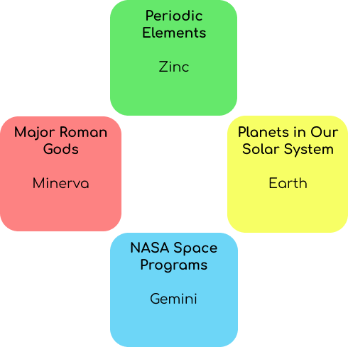
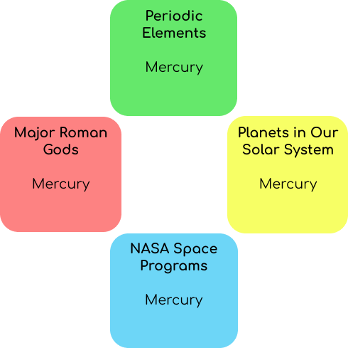

Sources: {{source}}
Every puzzle has 4 categories. Entering 3 words that belong to a given category will complete it. Your goal is to complete all 4 categories in as few guesses as possible. You can do this by identifying intersections, or words that fall into multiple categories.
Example:
Imagine a game with the categories Major Roman Gods, NASA Space Missions, Periodic Elements, and Planets in Our Solar System. By entering guesses that belong exclusively to a single category, you’ll fill the categories inefficiently:

Alternatively, by finding this puzzle’s intersections, you can reduce your number of total guesses:

Of course, not every intersection belongs to all four categories, as “Mercury” does in the example above. Intersections between two or three categories are more common (e.g., “Venus” or “Apollo”), and you’ll often need a few single-category entries to fully complete the game.
The perfect score represents the fewest possible guesses required to complete the puzzle. Each puzzle’s perfect score is initially hidden, but if you get stuck, you can use the Reveal button to see if you’re on the right track.